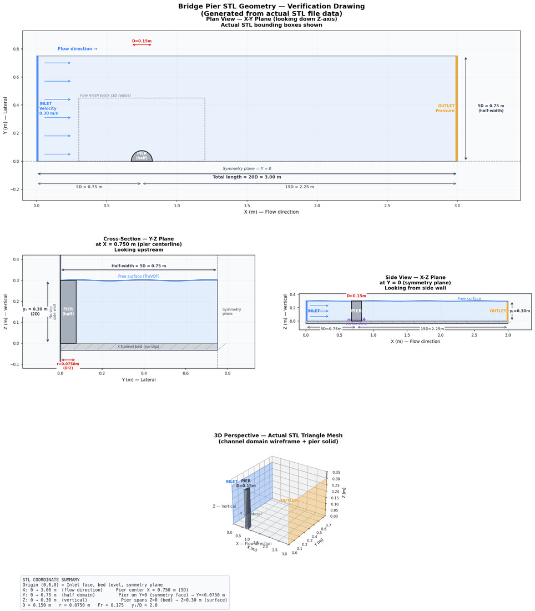
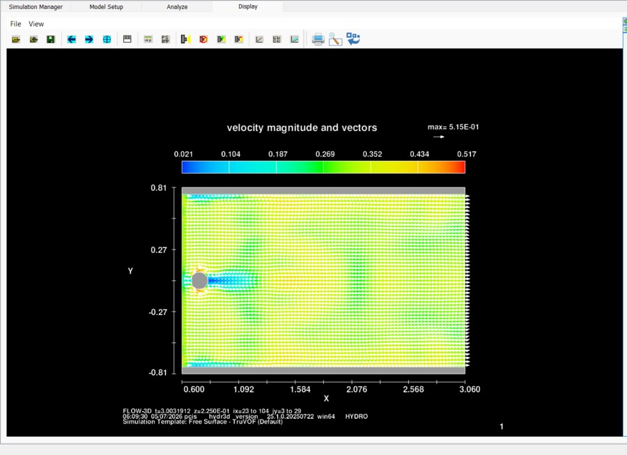
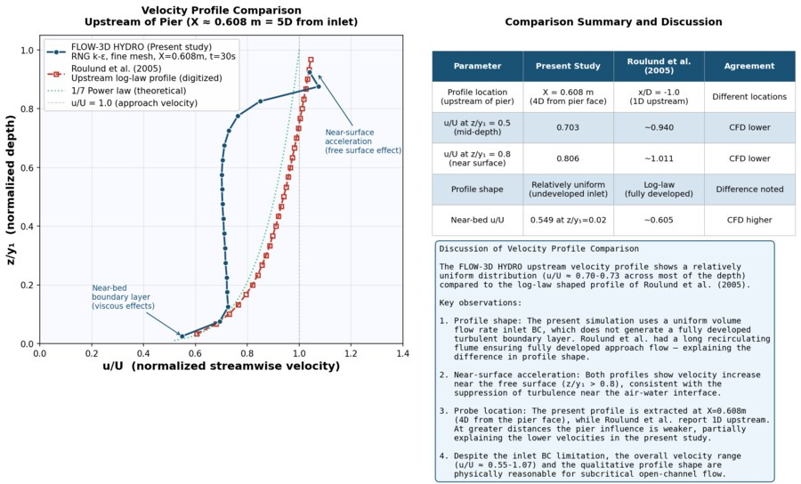

CFD Scour Simulation of a Bridge Pier
Bridge pier scour has been linked to over 1,000 U.S. highway bridge failures since 1950. This project simulates the horseshoe‑vortex mechanism that drives it in 3D CFD, then checks the result against a published laboratory benchmark rather than taking the simulation's word for it.

Abstract
Bridge pier scour, the erosion of streambed sediment around a bridge foundation by flowing water, is the leading documented cause of highway bridge failure in the United States. The Federal Highway Administration has linked it to over 1,000 bridge failures since 1950. This project used FLOW-3D HYDRO, a three-dimensional computational fluid dynamics (CFD) package, to simulate turbulent flow around a circular bridge pier and study the horseshoe-vortex mechanism that drives local scour, then validated those simulation results against a well-established published benchmark: Roulund, Sumer, Fredsøe & Michelsen (2005), Journal of Fluid Mechanics.
A half-domain open-channel model of a 0.15 m diameter circular pier under subcritical flow (Froude number 0.175) was built using the Volume of Fluid (TruVOF) method for the free surface and the RNG k-epsilon turbulence model as the baseline. A formal grid-convergence study across three mesh densities selected a fine mesh (0.015 m cells, ~200,000 cells) as the primary simulation. That simulation produced a velocity amplification of 1.52× at the pier flanks and a bed shear-stress amplification of about 4.0×, both landing inside the ranges Roulund et al. reported (1.3 to 1.6× and 4 to 7× respectively), which is the core validation result of the study. Two further variations were tested: swapping in the k-omega turbulence model, and activating a sediment-transport module. The HEC-18 CSU empirical equation, run independently as a cross-check, predicted an equilibrium scour depth of 0.191 m, and the sediment-transport simulation confirmed active erosion exactly where the horseshoe vortex analysis said it should occur, at the base of the pier flanks.
Why this problem matters
The horseshoe vortex forms when the turbulent boundary layer approaching a pier separates and rolls downward into a vortex that wraps around the pier base, amplifying local bed shear stress well beyond the undisturbed flow, enough to mobilize sediment that would otherwise stay put. As that material is carried away, a scour hole develops and deepens until the changing geometry brings local shear back down to the threshold for sediment motion, at which point the scour hole stabilizes. Left unaccounted for, that erosion can undermine a bridge foundation far below its design depth. Predicting where and how deep that scour will be before it happens is the whole point of both the empirical design equations engineers use today (like HEC-18) and the CFD approach this project tests as a complementary tool.
Modeling approach
The domain was a straight open channel containing a single circular pier, built as a half-domain model (mirrored at a symmetry plane) to cut computational cost without sacrificing accuracy, since the geometry and flow are symmetric about the pier centerline. Its dimensions were deliberately chosen to match Roulund et al.'s experimental setup, including a water-depth-to-pier-diameter ratio of 2.0, so the CFD results could be compared to their measurements on an apples-to-apples basis rather than approximately.
Three mesh resolutions (0.030 m coarse, 0.020 m medium, 0.015 m fine) were run with identical physics settings, isolating the effect of mesh density alone. The coarse mesh clearly over-predicted both velocity and shear stress due to poor resolution of the pier's curved surface. Results were still shifting between the medium and fine meshes, so the fine mesh, with roughly ten cells spanning the pier diameter, was adopted as the primary configuration, balancing resolution against the computational cost of running an even finer grid.
With the fine mesh fixed, two further physics variations tested how sensitive the results are to modeling choices rather than mesh alone. The first substituted the k-omega turbulence model for the baseline RNG k-epsilon, since Roulund et al.'s own numerical work used k-omega, making this comparison directly relevant to the validation. The second activated FLOW-3D's sediment-transport module (0.5 mm sand, Van Rijn bed-load transport, Soulsby-Whitehouse critical Shields parameter) to see whether the model's predicted erosion pattern actually lines up spatially with where the rigid-bed analysis said shear stress was highest.
Results
On the fine mesh, the approaching 0.30 m/s flow accelerated to 0.456 m/s at the pier flanks, a 1.52× amplification, with a clear low-velocity wake extending 5 to 8 pier-diameters downstream. Maximum bed shear stress reached 0.401 Pa at the same flank locations (the horseshoe-vortex footprint), an amplification of roughly 4.0× over the undisturbed bed. Both numbers fall within the ranges Roulund et al. reported from their combined laboratory and numerical study (1.3 to 1.6× for velocity, 4 to 7× for shear stress), which is the key validation result: the simulation is reproducing the correct physical mechanism, not just a plausible-looking flow field.
A vertical velocity profile extracted upstream of the pier showed the expected near-bed velocity deficit and near-surface acceleration, though its overall shape was more uniform through the mid-depth than Roulund et al.'s log-law-shaped profile. That difference is attributed to the simulation's uniform-inflow boundary condition rather than to a fully developed turbulent boundary layer like Roulund's long recirculating flume produced. It's flagged directly as an acknowledged modeling limitation rather than glossed over, since it's a known consequence of the simplified inlet condition rather than a validation failure.
Swapping in the k-omega turbulence model raised the maximum bed shear stress by about 30% (0.522 Pa vs. 0.401 Pa) and pushed its shear-stress amplification factor to roughly 5.2×, landing more centrally in Roulund et al.'s reported range, consistent with the fact that Roulund's own numerical study used k-omega. That's a meaningful practical finding on its own: turbulence-model choice alone can shift a scour-relevant prediction by 30%, which matters when a CFD result is feeding into a design decision. The sediment-transport run confirmed active bed lowering at precisely the pier-flank locations identified as high-shear zones in the rigid-bed analysis, directly linking the horseshoe-vortex mechanism to observable erosion. Cross-checked against the HEC-18 CSU empirical equation's 0.191 m equilibrium scour-depth prediction, both CFD turbulence models produced maximum shear stresses exceeding the critical threshold for the sediment size used (about 0.38 Pa), confirming active scour potential under the simulated conditions, with the k-omega result giving the more conservative (higher) margin above that threshold.


Conclusion
The fine-mesh FLOW-3D HYDRO simulation reproduced the two scour-relevant metrics from the Roulund et al. (2005) benchmark, velocity amplification and bed shear-stress amplification, within their reported experimental ranges, which is the core validation this project set out to establish. The grid-convergence study demonstrated that mesh resolution matters enough to change conclusions, not just numbers, and the turbulence-model comparison showed the same is true of solver settings: k-omega and RNG k-epsilon disagreed by 30% on a metric directly tied to scour risk. Combining the CFD analysis with the classical HEC-18 empirical method proved more informative than either alone. HEC-18 supplies the equilibrium scour depth a designer actually needs, while the CFD analysis explains and confirms the spatial mechanism (the horseshoe vortex) driving that erosion, including where on the pier it will be worst.